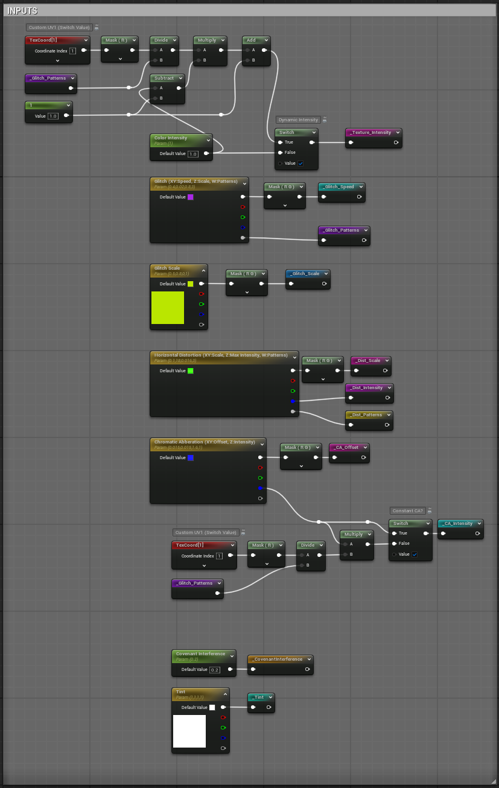
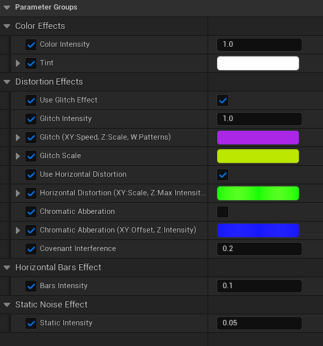
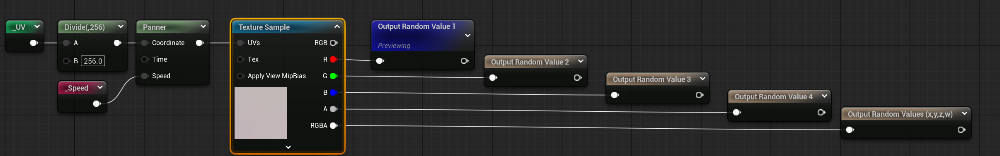
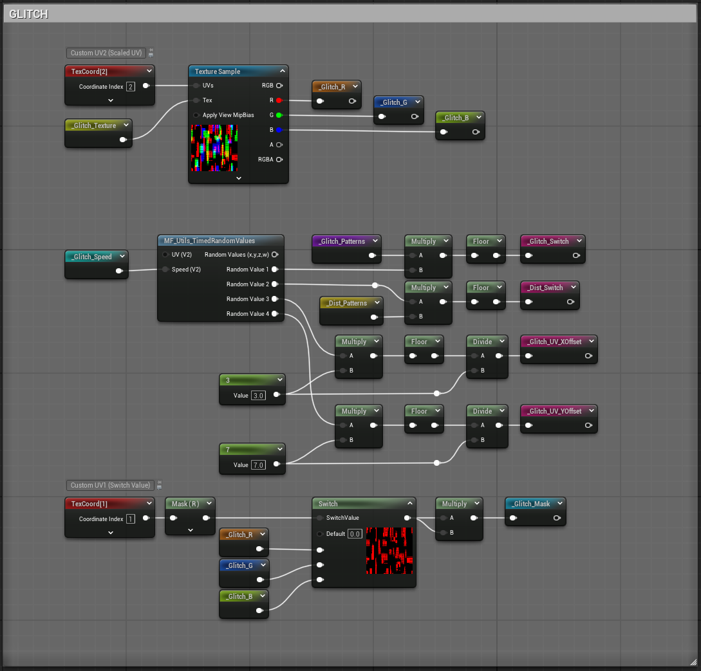
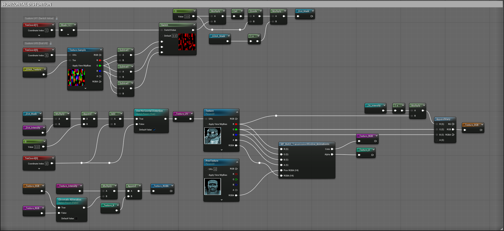
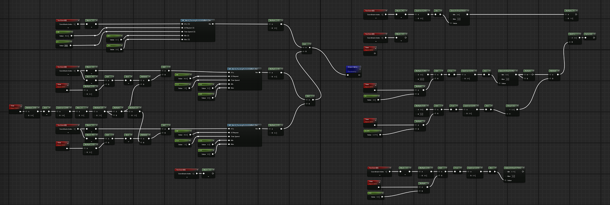
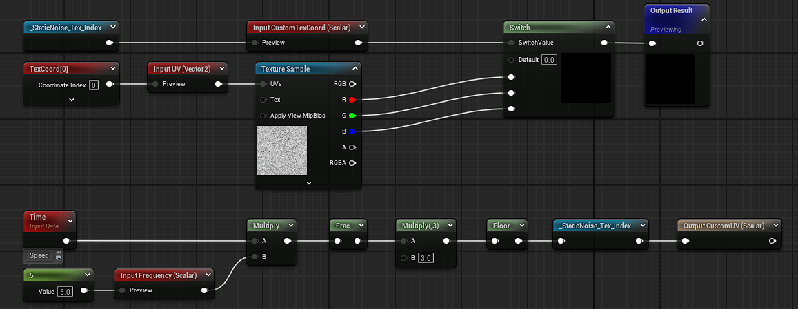
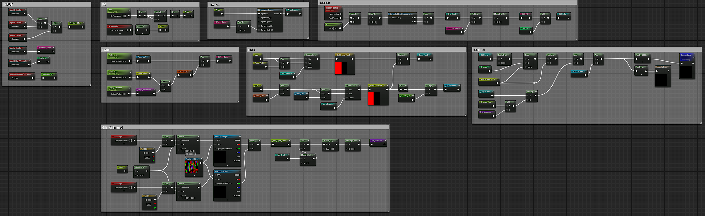
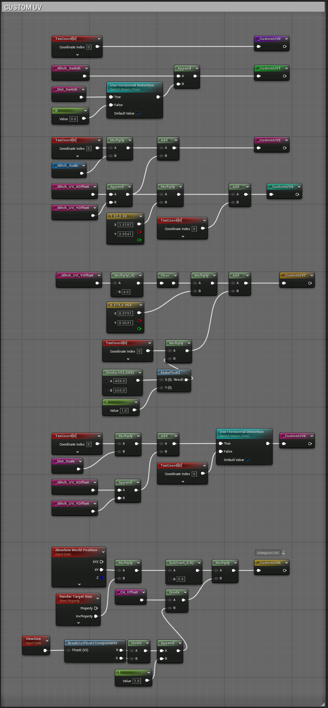

The problem
Dialogue during combat-adjacent space missions was competing with the fight and losing.
Several space-mission beats depend on the player listening, briefings, ally transmissions, villain provocations. In playtest, dialogue that carried real story weight was routinely missed: the player was busy dogfighting, the VO played, and nothing on screen told them it mattered. Audio alone wasn't enough of a visual anchor to pull attention.
We needed a treatment that lived on the ship's HUD, felt native to the fiction, and could change character per line, from a routine ally briefing, to Harmony's hijacked broadcast, to an ally's final transmission going dead. One-off assets per line was not going to survive iteration or localization.
Missed dialogue isn't a performance problem, it's an attention problem. The fix has to make the eye do the audio system's job.
Constraints
Story-legible, not just cool
The effect has to read: normal transmission vs. hijacked vs. failing must all be recognizable at a glance, without dialogue popup boxes explaining themselves.
Language-agnostic
Effect changes drive off audio events on individual VO lines, not off English strings, so the same beats land in any localized voice track.
Author-friendly parameters
Six independently controllable effect groups. Designers and narrative should be able to dial glitch intensity for one line without touching another.
Cheap enough to ship in combat
This runs during real combat frames. The material has to stay a UI cost, not a screen-effect cost. CustomUVs, not extra samplers.
The key idea
One material, six composable interference effects, all driven by audio events on individual voice lines.
The PIP is a single UMG material (M_MetUI_Transmission) whose behavior is a
stack of interference layers, texture-driven random values, an RGB-shift glitch,
horizontal distortion, static noise, panning wave-distorted screen bars, and a wipe
animation. Each layer is authored as an independent parameter group, so a hijacked
transmission is just the same material with different values. Effects trigger
on audio events fired against each voice line, which localizes cleanly and lets narrative
beats escalate per line without touching the material.
The effect stack
The material's inputs section takes a single source texture, then hands it through six
composable effect groups. Each group is one MaterialFunction or graph section
exposed as a parameter block; the compositor at the bottom of the graph blends and outputs.

_CovenantInterference parameter drives the villain-specific rise.
1. Texture-based random value generation
A single 256×256 noise texture sampled through a panner produces four independent pseudo-random channels (R/G/B/A) that other effects hook into. Cheap, deterministic, and lets every effect share one sampler instead of duplicating noise math.

2. Glitch (RGB shift with pattern channels)
The classic broken-signal look. Offset the RGB channels along a moving pattern; the Glitch (XY:Speed, Z:Scale, W:Patterns) parameter packs four knobs into one vector so the whole effect can be reset in one line.

3. Horizontal distortion
Row-based UV offset, useful on its own for a "signal breaking up" look and stackable with the glitch for the villain's hijack. Same packed-vector convention: XY:Scale, Z:Intensity, W:Patterns.

4. Panning horizontal bars with wave distortion
The vertical-crawl bars that sell "analog CRT scanline." Two independently-panning bar layers with additive-blended wave distortion so they never repeat cleanly.

5. Static noise
Straight film-grain / TV-static overlay, layered under the bars and glitch so the transmission never sits fully still.

6. Wipe animation
A parametric wipe that plays on transmission open/close, and, more importantly, on the "signal-lost" beat when an ally's transmission cuts off mid-sentence.

Chromatic aberration, and the trade-off we shipped
Chromatic aberration was authored as a seventh effect. In profiling we decided its cost wasn't defensible for a widget that renders every combat frame, so we removed it from the material. Instead, we baked it directly into Harmony's source texture, cheap, only applies to him, and the villain is the only case that story-requires it. The trade-off: no "aberration rising over time" for Harmony. Acceptable, because the glitch and horizontal distortion layers already carry escalation.
Performance, 7 CustomUVs
Every material op that only depends on the vertex should live in the vertex shader. Unreal's
CustomUV outputs let you do exactly that, precompute a per-vertex value once
and interpolate it into the pixel shader, instead of recomputing it per pixel.
Seven of the panner/scale/offset math nodes across the six effect groups only depend on
quad vertices, so they went through CustomUV0–CustomUV7 instead
of the pixel shader. The final numbers, off the material stats panel:
- Total shipping cost: Pixel
181instructions · Vertex82instructions. - Delta from the CustomUV pass: −
24pixel instructions moved to +32vertex instructions. - Bonus: two fewer texture samples in the pixel shader by resolving UV math per-vertex.

Audio-driven, per voice line
The trigger surface is audio events, not narrative flags or English strings. I worked with the audio team to attach per-line event tags so the material can respond to this specific VO cue, not "when Harmony is talking" as a boolean. That decoupling is what let Harmony's hijack escalate line by line, and what let the ally's final transmission cut cleanly on the last syllable, without any code branch checking who's speaking.
It also means the effect ships in every localization for free, because the audio-event timing is identical across voice tracks.
Two story beats, same material
Escalating interference, per line
Baseline transmission → glitch rising → horizontal distortion adding, then the built-in aberration in the source texture reads as the signal fully compromised. All parameter changes on audio events, no timeline scripting.
Signal degrades, then cuts
Static and bars intensify across a few lines, then the wipe animation fires on the final audio event, mid-sentence cut. The player understands what happened without a callout.
Instanced material, dialable per screen
Narrative and design can grab a material instance, change intensity/tint per beat, and drop it into a scene. No new material, no engineer round-trip.
Effect changes are language-blind
Audio events fire at the same timeline positions in every language, so a French Harmony hijack lands identically to an English one.
What I'd carry forward
- Effect stacks are cheaper than effect variants. One material with six exposed parameter groups covers a wider design space than six separate materials, and stays instanced-cheap.
- Audio events are the right trigger surface for VO-driven visuals. Binding to strings or to narrative flags would have leaked into localization and into gameplay scripting. Audio events belong to the line and travel with it.
- CustomUVs are almost always worth the pass. −24 pixel instructions and −2 texture samples for +32 vertex instructions is a straight win at UI cost per pixel; the same pattern applies to almost every screen-space UI material we ship.
- Kill features when profiling asks. Chromatic aberration didn't survive the profiling pass, and the story didn't lose anything, because we asked "does the beat still read?" and the answer was yes.
- Review-bound iteration is a real cost. Two days of material work took a week of wall time because the Design Director's calendar gates the sign-off loop. Batching questions and shipping a tuning-instances build to review would have shrunk that.